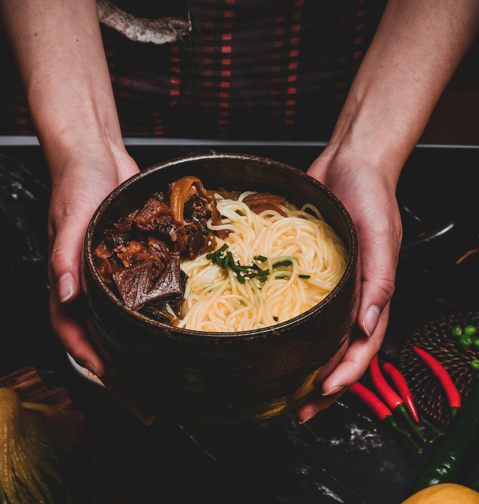
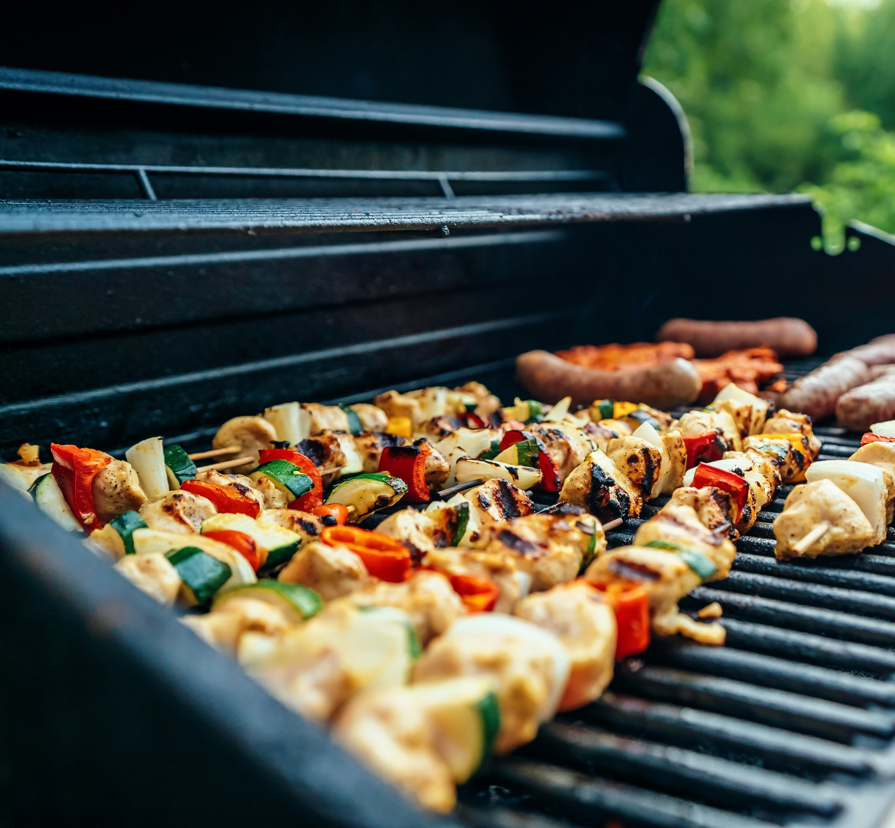
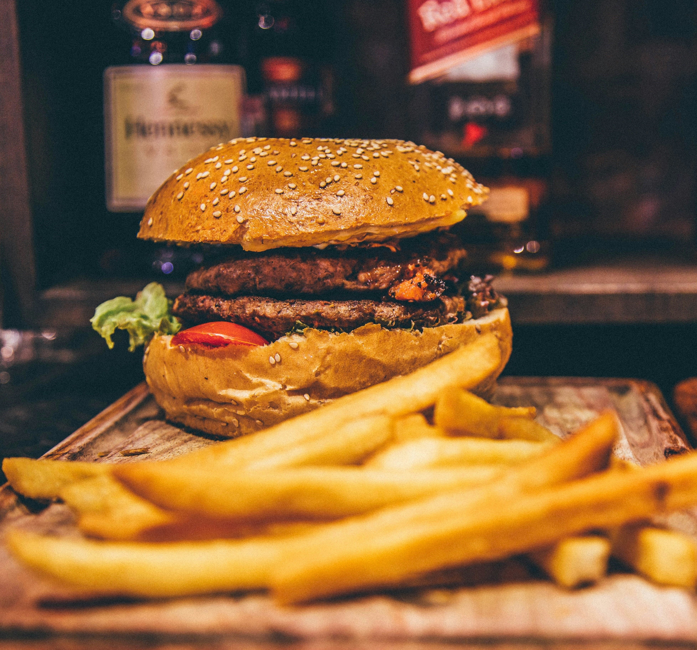
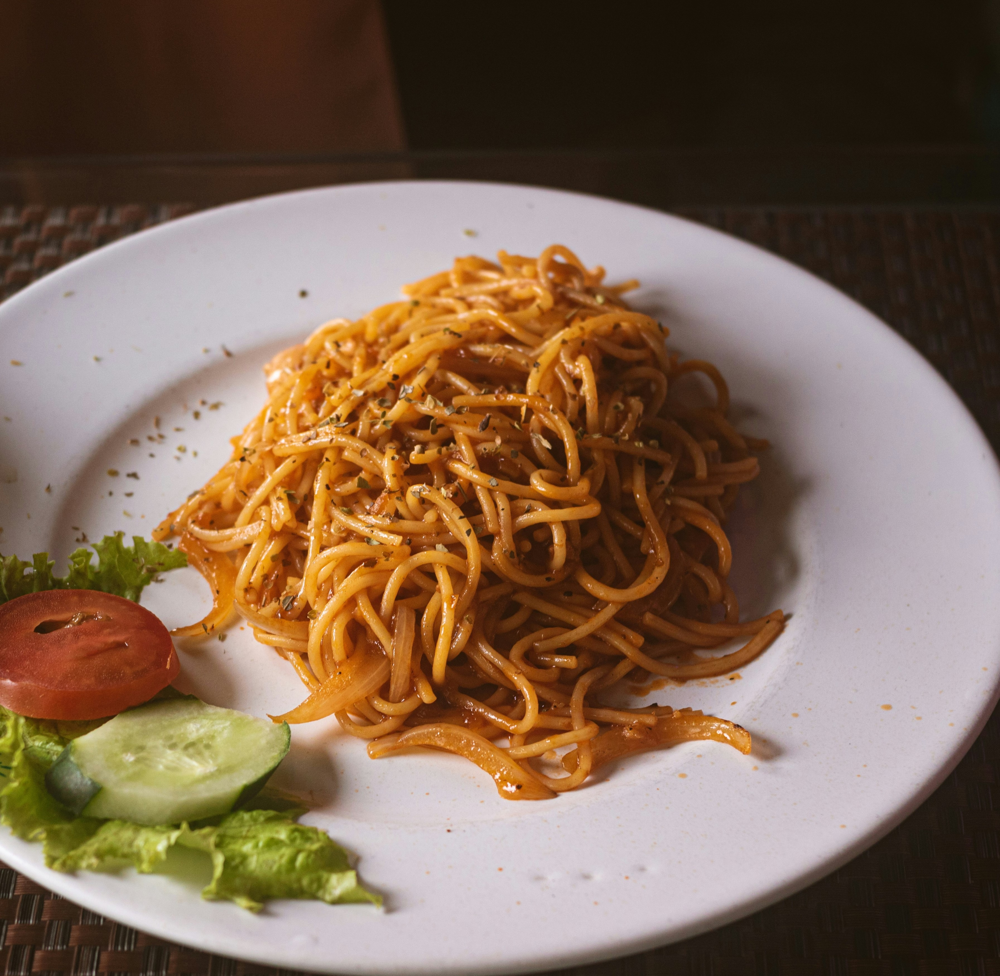
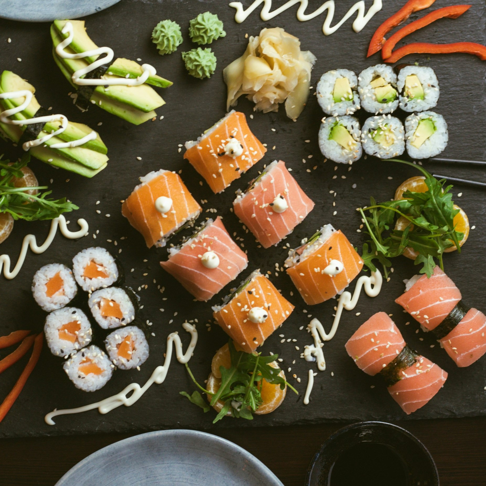

EatzyMeal

Nudlar
Tunna degtrådar som kokas och ofta serveras med grönsaker, kött eller buljong .
Noodle Menu

Grill
Mat tillagad över öppen eld eller glöd – ofta kött, kyckling, grönsaker eller korv med rökig smak.
Grill Menu

Hamburgare
En köttfärsbiff (eller vegoalternativ) mellan två bröd, ofta med sallad, ost, tomat, lök och dressing.
Hamburger Menu
Pizza
Tunn eller tjock degbotten toppad med tomatsås, ost och olika fyllningar – bakas i ugn.
Pizza Menu

Spaghetti
Italiensk maträtt med kokt pasta, vanligtvis serverad med sås som tomatsås, köttfärssås eller gräddsås.
Pasta Menu

Sushi
Japansk rätt med ris, rå fisk eller skaldjur, ofta serverad med soja, wasabi och inlagd ingefära.
Sushi Menu